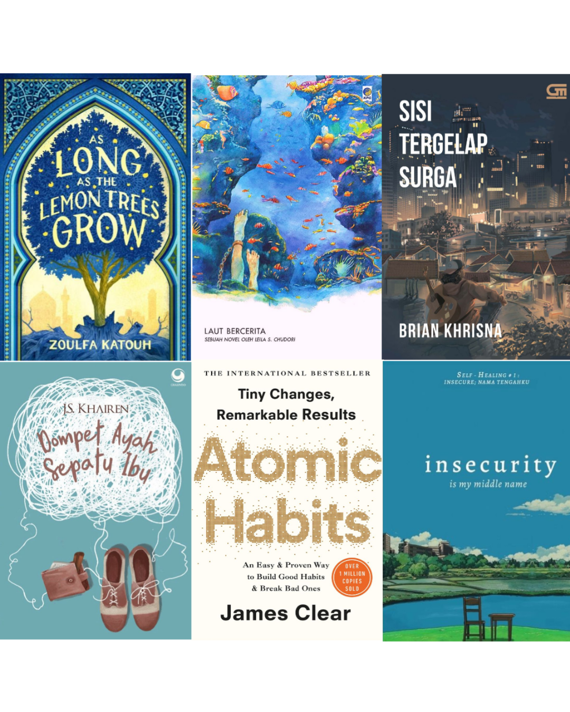
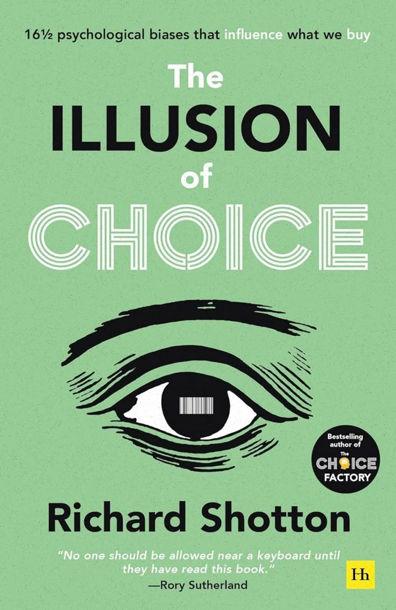

Teman Baca Kamu < 3
Buat Hari Mu Lebih Baik Dengan Membaca
Welcome to our library, where every book tells a story and every page sparks joy. Mulailah petualangan literasimu di sini.

Welcome to our library, where every book tells a story and every page sparks joy. Mulailah petualangan literasimu di sini.

Di antara huruf dan makna, kami menghadirkan ruang bagi buku untuk hidup dan berbicara. Setiap karya adalah jendela menuju dunia yang lebih luas—menghidupkan imajinasi, memperkaya pengetahuan, dan menyentuh rasa.

Buku yang membahas bagaimana kebiasaan kecil dapat membawa perubahan besar, memberikan panduan praktis membangun kebiasaan positif.
Lihat DetailKisah realitas keras kehidupan masyarakat bawah di Jakarta, menarasikan perjuangan karakter bertahan hidup di tengah kemiskinan kota.
Lihat Detail
Novel yang mengangkat kisah kelam penculikan aktivis mahasiswa pada masa Orde Baru tahun 1997-1998 melalui tokoh Biru Laut.
Lihat Detail
Fiksi remaja romantis berlatar belakang revolusi Suriah, berfokus pada perjuangan, trauma, dan harapan tokoh Salama.
Lihat Detail
Konsep psikologis di mana individu merasa memiliki kebebasan memilih, padahal opsi telah diatur oleh pihak lain.
Lihat DetailMenggali lebih dalam bagaimana psikologi memengaruhi keputusan finansial kita dan hubungan emosi dengan uang.
Lihat Detail"Pemilihan tata huruf dalam gulungan digital ini bagaikan tarian pena seorang maestro. Membuat mata enggan berpaling walau telah menyelami ribuan bait."

"Hadirnya fitur mode malam merupakan oase bagi para perindu sunyi. Latar gulita tidak menyilaukan, melainkan mendekap pandangan dengan kelembutan."

"Berlayar di situs ini laksana mengarungi samudra ilmu yang tiada batas. Dari rima klasik yang membangkitkan nostalgia hingga prosa kontemporer yang menggugah nalar, segala dahaga akan hikayat berhasil terpuaskan dalam satu pelukan ruang maya"

Kinerja pemuatan halaman di bilik maya ini patut mendapat kidung pujian. Transisi dari satu bab ke bab berikutnya berkelebat secepat embusan angin bayu, menjaga nyala antusiasme agar tidak redup di tengah asyiknya menyelami mahakarya"

"Situs ini akan terasa lebih bermakna apabila disematkan sebuah beranda bagi para penikmat sabda untuk saling bertukar asa. Sebuah pelataran diskusi yang mengizinkan para perindu buku menyulam opini dan mengurai makna dari setiap epik yang telah khatam diselami."

"Buku yang membahas bagaimana kebiasaan kecil dapat membawa perubahan besar, memberikan panduan praktis membangun kebiasaan positif."